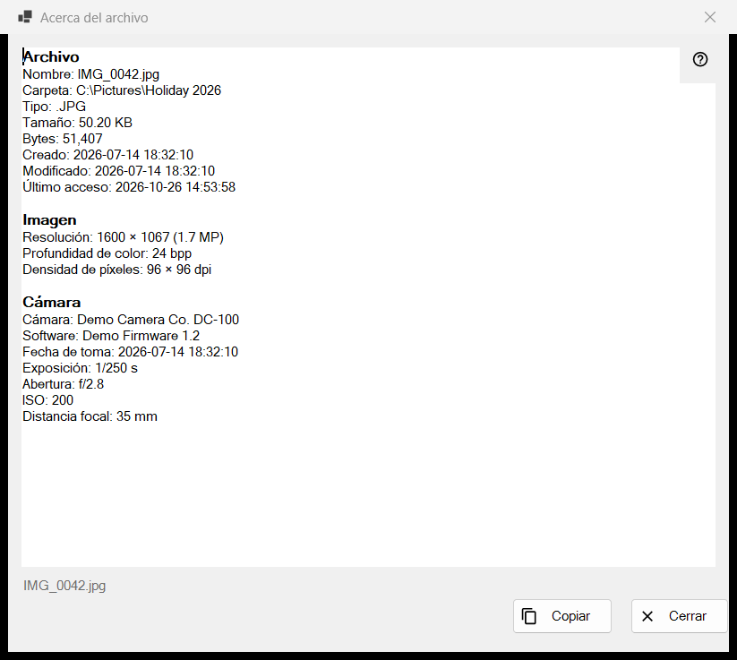
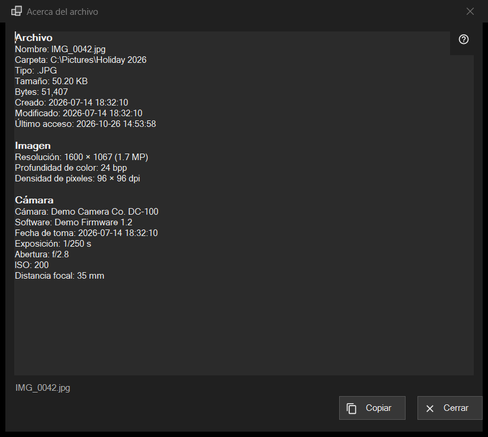

Acerca del archivo
Para qué sirve
Una instantánea de solo lectura de lo que el programa sabe del archivo que hay en pantalla: el archivo en sí, una imagen con los datos de su cámara, un documento y las pistas de audio y vídeo. Se abre desde el elemento i del primer panel, o desde Acerca del archivo en el bloque de archivo de los menús del visor, y describe el archivo tal como estaba en el momento del clic.


En este orden
- Muestre un archivo en el visor.
- Haga clic en el elemento i del primer panel, o elija Acerca del archivo en el menú.
- Espere un momento: la línea de estado dice Leyendo los metadatos del archivo.. y las filas se van rellenando.
- Lea los bloques, seleccione lo que necesite y pulse Copiar para poner todo el texto en el portapapeles.
- Pulse Cerrar o Esc.
Los elementos
Archivo
Todos los archivos tienen este bloque: Nombre, Carpeta, Tipo, Tamaño, Bytes, Creado, Modificado, Último acceso y Atributos. Una fila sin nada que mostrar se omite. Si no hay ningún archivo abierto, la línea de estado dice No hay ningún archivo seleccionado; una copia temporal de un archivo comprimido, una dirección remota o un archivo que ha desaparecido da El archivo no está disponible, y no se abre ninguna ventana.
Imagen
Para una imagen: Resolución tal como se muestra (una foto de móvil guardada de lado se lee con su tamaño en vertical), Profundidad de color y Densidad de píxeles, cuando el archivo los registra.
Cámara
Se leen de los datos EXIF de la foto: Cámara, Software, Fecha de toma, Exposición, Abertura, ISO, Distancia focal y Autor. Las coordenadas aparecen solo si la foto lleva datos GPS, y Copiar las incluye, así que revise el texto antes de compartirlo.
Documento
Para un archivo de texto: Líneas, Palabras, Caracteres y Codificación, además de El archivo se leyó solo parcialmente cuando es demasiado grande para leerlo entero. Para un libro electrónico: Nombre y Autor. Para un PDF: Páginas.
Medios, Vídeo y Audio
Para los archivos de audio y vídeo, las etiquetas (Nombre, Intérprete, Álbum, Año, Pista, Género, Director, Serie, Temporada, Episodio, Duración) y la primera pista de cada tipo (Vídeo: Resolución, Fotogramas por segundo, Códec, Tasa de bits; Audio: Códec, Canales, Frecuencia de muestreo, Tasa de bits) se añaden un momento después del resto, cuando el motor multimedia termina de leer. La ventana nunca lo espera. Las transmisiones de red no tienen filas de pistas.
Copiar y Cerrar
Copiar pone todo el texto en el portapapeles y la línea de estado dice Copiado al portapapeles; si otro programa tiene ocupado el portapapeles, lo indica y puede pulsar Copiar de nuevo. También funciona una selección copiada con Ctrl+C. Si no se pudo leer nada, el cuadro dice No se pudieron leer los datos del archivo. Junto a los botones, la línea de estado muestra el nombre del archivo. Pasar a otro archivo no cambia esta ventana: haga clic en i otra vez para el archivo nuevo.